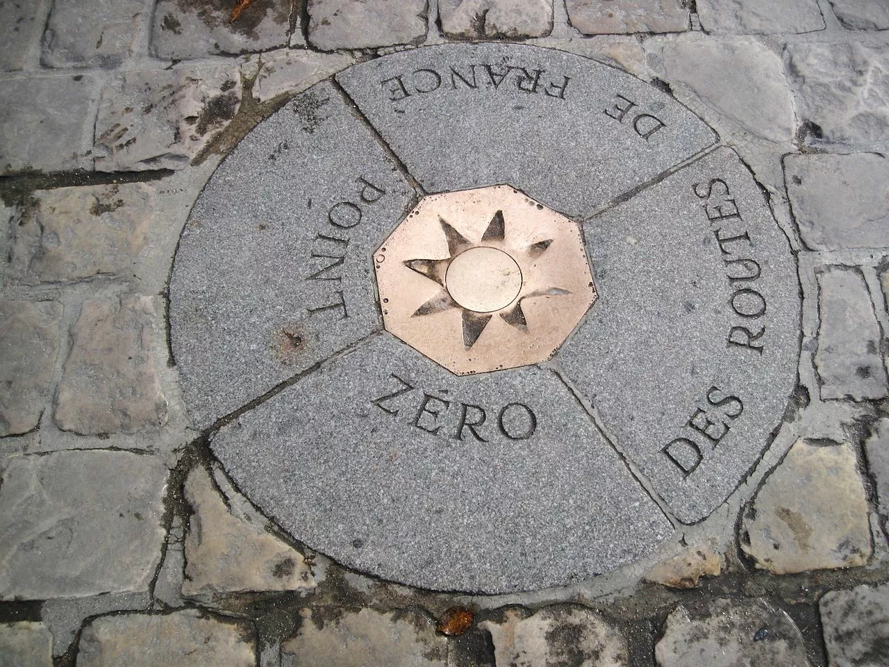

Mise à jour le 2020-12-26
I rewrote everything in rust for much more simplicity and explained it a blog post in french.
All roads lead to Rome and it makes great maps! The project Roads to Rome made a small buzz with their gorgeous maps showing a superposition of many routes that lead to Rome.
They well deserve their success. The representation looks like a human cardiovascular system, whose heart is Rome.
I was somewhat jealous for not having that idea first. Nor did I have the aesthetic talent to make a beautiful representation, so I was slightly condescending: “Meh. It’s only 20 lines of code for a Dijkstra and some plotting”.
Having some free time in Perpignan with my family for a week, I tried to copy their work. Here is a journal of what I did.
Since my laptop is a 4 years old netbook and due to my laziness to optimise my code, the example will only cover France and not Europe on the whole.
{kind=link}
Data from OpenStreetMap under ODbL
1. Get the data
Of course I used OpenStreetMap. However, processing all the data of France was too much for my modest project osm4routing. I used the extraction part from OSRM.
I read the binary representation in the .osrm files. This
is not portable at all as the format is a temporary file format.
Actually, my code does not work anymore on their develop branch.
The street network of France consists of a little more than 30 millions nodes and about the same amount of edges. As a pleasant bonus, OSRM also reads ferry routes. This allows us to reach Corsica and other islands.
2. Compute all the routes

So we extracted a nice graph, with realistic travel durations. We now want to compute all the routes that start from Notre-Dame. Indeed, while all roads lead to Rome, all roads start from Notre-Dame (FR).
The starting point is the node 677151951 in OpenStreetMap.
Luckily, computing all routes from a single node to every other has been solved more than half a century ago.
This is exactly what Dijkstra’s algorithm does. In fact, I used the Bellman-Ford algorithm as I did not care about performance and I preferred its trivial implementation.
3. Count the use of every edge
Once we have all the routes from Notre Dame to all the nodes in France, we take each single route from Notre-Dame to every node in France and we count how many routes each edge occurs in.
All the edges are inserted into a PostGIS database (Postgres with a geographical extension) with their coordinates and use count.
All the steps until now were implemented in Rust and are available here.
Initially I planned to use QGis or Mapbox to make the rendering. However, the size of the data made that impossible for any area larger than the greater Paris.
4. Draw everything on a image
The coordinates are given as [(longitude; latitude)]. If you
plot them directly as [(x; y)] on a picture the result is
horrible at higher latitude. It is called the plate carrée
projection.
(By the way, if you plot [(lat; lon)] it will be even worse😉)
The official projection for continental France is Lambert 93. With Postgis and a lot of waiting, I could trivially reproject all the coordinates.
As I could not find how to use a graphics library in Rust, I ended up drawing the edges in C++ using Cairo.
But first I dumped all the edges in a binary file in order to save some time when experimenting around.
With a lot of trial and error I found a reasonable balance between the width of each edge and its darkness.
For the pictures with the largest resolution, I drew every edge that was used by more than 10 routes. That represents about 18 million edges.
5. Scale for Europe
So I got a nice representation of all the roads from Notre-Dame in France. What about Europe, like in the project I ripped off? My 4 years old netbook was mistreated enough.
I would need a better machine (much more RAM, an SSD disk would be nice), and to make some improvements:
- Use Dijkstra’s algorithm instead of Bellman-Ford
- Find a more effective way to count every edge use
- Skip the intermediate step with PostGIS; dump directly into a binary file
- Find a proper way to draw 100 million little dashes?